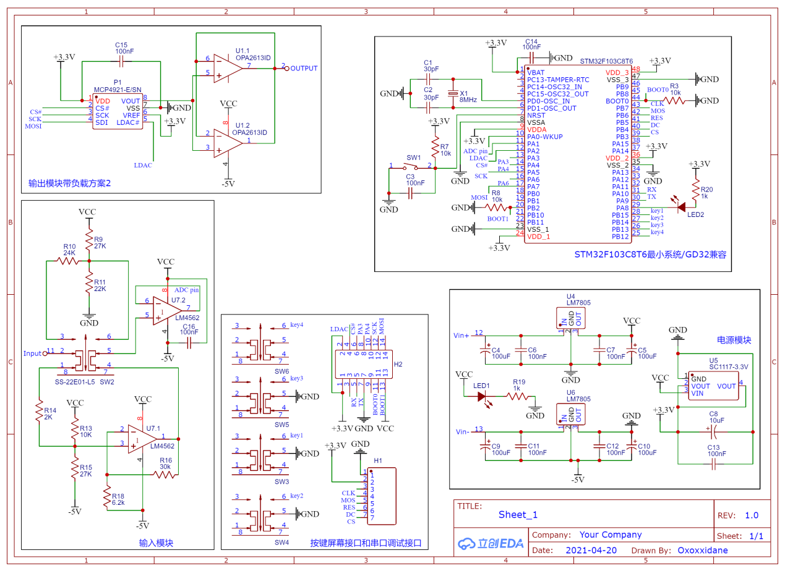

单次波形复现装置
系统主要由以下几个部分组成：由偏置电路和放大器构成的输入模块、按键接口和串口调试模块、由STM32构成的对输入信号进行周期采样的采样存储电路、由数模转换器电路和电流电压跟随器构成的输出模块。其中，输入模块有两种工作模式，通过开关切换，一种是4v峰峰值工作模式， 另一种是100mv的峰峰值工作模式，分别由各自的偏置电路提供工作条件。输入模块将输入电压转到0~3.3v之间供给STM32单片机测量采样。将采样得到的数据进行FFT后得到频域信息，并在OLED显示屏上输出最大谐波峰值与频率。输出模块通过数模转换器转换成模拟信号，并经过电压跟随器，最终获得周期重复的输入信号。
电源模块对将电源输入稳压到5V、3.3V、-5V供给运放和单片机使用。输入模块对信号加偏置并放大供给单片机输入。通过按键和屏幕实现单片机程序的输入输出。单片机通过SPI协议驱动MCP4921输出0-3.3V模拟信号，经电压跟随器输出。